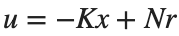
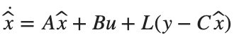
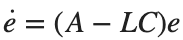

State Feedback과 Observer · 학습
실행 조건
MATLAB · Control System Toolbox
이번에 배울 내용
위치만 측정하는 시스템에서 속도를 추정해 제어하고, 추정 속도와 잡음 민감도를 함께 비교합니다.
설계 전에 확인할 두 조건
Controllability는 입력으로 상태를 움직일 수 있는지, Observability는 출력의 시간 변화로 Initial State를 구분할 수 있는지를 묻습니다. 두 상태 모델에서는 [B, AB]와 [C; CA]의 rank를 상태 수 2와 비교합니다.
측정하지 않은 상태로 제어하기
State Feedback

에서 속도를 직접 측정하지 못하면 추정 상태를 사용합니다. Observer는 모델 예측에 측정 오차를 더해 갱신합니다.

이상적인 선형 모델에서는 제어기와 추정기의 Pole을 따로 설계할 수 있습니다. 하지만 Observer를 지나치게 빠르게 하면 측정 잡음이 제어입력으로 전달되는 영향도 살펴봐야 합니다.
MATLAB으로 같은 설계 확인하기
Observer의 상태 추정 오차는 입력과 무관하게  로 정해집니다. Controller의 Pole과 Observer의 Pole을 각각 배치한 뒤, 실제 상태와 추정 상태의 차이를 시간축에서 비교합니다.
로 정해집니다. Controller의 Pole과 Observer의 Pole을 각각 배치한 뒤, 실제 상태와 추정 상태의 차이를 시간축에서 비교합니다.
같은 모델의 제어기와 추정기
두 Pole 배치 결과를 계산하고 입력과 무관한 추정 오차의 수렴을 확인합니다.
%% Worked example
A=[0 1;-2 -3]; B=[0;1]; C=[1 0];
K=place(A,B,[-2 -4]); L=place(A',C',[-8 -10])';
disp(K); disp(L); assert(norm(K-[6 3])<1e-10 && norm(L-[15;33])<1e-10);
t=linspace(0,4,801)'; estimationError=initial(ss(A-L*C,zeros(2,1),eye(2),zeros(2,1)),[1;0],t);
figure; tiledlayout(2,1);
nexttile; plot(t,estimationError(:,1)); ylabel('Position error [m]'); grid on
nexttile; plot(t,estimationError(:,2)); ylabel('Linear Velocity error [m/s]'); xlabel('Time [s]'); grid on
disp(estimationError(end,:));